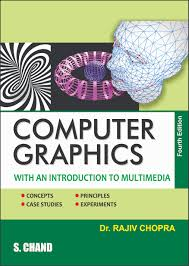

Get Latest Books of Your Choise For Free.......!!!
An interaction designer draws upon user data, research and team input to generate interaction concepts that enable seamless and relevant experiences for their users. The strategy is broken down into emotional and physical interaction concepts to ensure that the user finds the product engaging, yet easy.
Free Download
"Software engineering is a detailed study of engineering to the design, development and maintenance of software. Software engineering was introduced to address the issues of low-quality software projects. Problems arise when a software generally exceeds timelines, budgets, and reduced levels of quality.
Download
"Data warehouses are used for analytical purposes and business reporting. Data warehouses typically store historical data by integrating copies of transaction data from disparate sources. Data warehouses can also use real-time data feeds for reports that use the most current, integrated information.
Download

"Computer graphics are pictures and films created using computers. Multimedia is content that uses a combination of different content forms such as text, audio, images, animations, video and interactive content.
Download